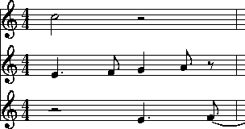

|
|
The simplicity of these definitions is deceptive. In real music, the determination of pitch intervals can be surprisingly complicated. In this chapter we will discuss Humdrum tools related to melodic pitch intervals -- specifically the mint (melodic interval) and xdelta commands. Discussion of harmonic intervals will be delayed until Chapter 15.
Example 11.1 provides a contrived illustration of seven different types
of melodic intervals.
(The corresponding **kern representation is given on the
following page.)
The simplest melodic interval is calculated between successive
pitches within the same voice or part.
We might call this a
voiced melodic interval.
Examples of voiced melodic intervals are the descending perfect
fourth between the first two notes of the upper part,
and the rising semitone at the beginning of the lower part.
Even within a monophonic score, successive pitches may have one
or more rests interposed between them.
Depending on the research task, the interval spanning across the
rest(s) may or may not be considered important.
We might call such intervals
interrupted melodic intervals.
An example of an interrupted melodic interval is the ascending perfect
fourth in the upper voice between the last note of the first measure
(A4) and the first note of the last measure (D5).
Example 11.1 continued.
In some cases, implied melodic intervals may arise by the interaction of two or more parts. For example, Example 11.2 shows a plausible reinterpretation of the voicings for the first measure. Here the quarter-note G is presumed to continue from the preceding eighth-note F rather than from the half-note C. In the context of the original
**kern**kern *staff1*staff1 *M4/4*M4/4 =1-=1- 4.e2cc 8f. 4.e4g .8a [8f8r =2=2 2f]2dd 4d 4g4b 4ff 4c 4e 4g4cc 4ee *-*-
**kern encoding above,
we might call such intervals
cross-voice melodic intervals.
Example 11.2 Possible re-interpretation of opening measure for Example 11.1.

In the second measure, both parts are encoded using multiple stops. In the upper part, two successive double stops are encoded. In the case of multiple-stops, it is common to perceive the outer-most notes as connected. Hence, the B would resolve to the C and the F would resolve to the E. We might call such intervals unvoiced outer intervals. We may call them unvoiced because they aren't encoded using separate spines. The voicings are implied, principally because the notes form an `upper' or `lower' part.
The multiple-stops in the lower voice illustrate even more possibilities. Apart from the unvoiced outer intervals (D->C and G->G), there are other possible melodic intervals. These include D->E and G->E. We might refer to such intervals as unvoiced inner intervals.
In many research tasks (such as identifying melodic variations), important interval relationships may stretch across several intervening notes. In Example 11.1, for example, the two half-notes in the upper voice might be viewed as forming an ascending major second interval (i.e. C->D). We might call such intervals distance intervals.
Finally, although in most situations tied notes should be treated as a single note, in some circumstances there is merit to considering each notehead as independent.
By way of summary, we have distinguished no less than seven different types of melodic intervals: voiced melodic intervals, interrupted melodic intervals, cross-voice melodic intervals, unvoiced outer intervals, unvoiced inner intervals, distance intervals, and tied note intervals.
Humdrum commands related to melodic intervals provide users with several alternative ways of interpreting melodic intervals. Users are typically interested in only certain types of intervals and so it is useful to restrict the outputs to specified interval classes.
Apart from the question of types of melodic intervals, melodic intervals can be calculated according to a variety of units. Depending on the circumstance, the user may wish to calculate diatonic intervals, semitones, cents, frequency differences, or even differences in cochlear coordinates.
The Humdrum
mint
command calculates melodic intervals for pitch-related representations
such as
**kern,
**pitch,
**solfg
and
**Tonh.
Output intervals are expressed using the traditional diatonic terms
where both interval quality and interval size are specified.
Interval qualities include perfect (P),
major (M),
minor (m),
augmented (A)
and diminished (d).
Interval qualities may also be doubly augmented (AA),
triply diminished (ddd) and so on.
Diatonic interval sizes are indicated by numbers
(1=unison, 2=second, ... 8=octave, 9=ninth, etc.).
Ascending and descending intervals are distinguished by a
leading plus sign (+) or minus sign (-) respectively.
In the default operation, mint outputs three of the seven types of melodic intervals. These are voiced melodic intervals, unvoiced outer intervals and interrupted melodic intervals; By way of illustration, Example 11.3 shows the output from the mint command for the input shown in Example 11.1.
Example 11.3 Default interval outputs from the mint command corresponding to Example 11.1.
Notice that the interrupted interval (spanning the rest) has been calculated, and that no unison has appeared for the tied note in the lower voice.
**mint**mint *M4/4*M4/4 =1-=1- .. +m2. -m2-P4 .+M2 +m2r =2=2 .+P4 -m3 +M2-m3 +m3 -M2 P1+m2 -m2 *-*-
If desired, the unison intervals between successive tied notes can be output via the -t option for mint.
Sometimes it is useful to maintain the initial starting pitches
in the output.
The presence of these "offset" pitch values can prove useful
in later reconstructing the original pitches from the
**mint
interval data.
When the
-o
option is invoked,
mint
outputs the initial starting pitches (placed in square brackets) from
which the subsequent melodic intervals have been calculated.
In order to avoid outputting interrupted intervals, the
-b
(break) option can be used.
This option requires a subsequent regular expression that
defines the contexts where the interval calculation should be
suspended and restarted.
A common invocation would identify **kern rests (r)
as a suitable place to break melodic interval calculations.
For example,
mint -b r inputfile
would produce the following output when applied to Example 11.1:
Notice that the perfect fourth (+P4) has been replaced by a null token at the beginning of measure 2. In addition, the rest token `
**mint**mint *M4/4*M4/4 =1-=1- .. +m2. -m2-P4 .+M2 +m2r =2=2 P1. -m3 +M2-m3 +m3 -M2 P1+m2 -m2 *-*-
r' has been
echoed just prior to the barline.
Depending on the regular expression given, the
-b
option can used for a variety of specialized intervals.
For example, suppose that we wanted to avoid calculating
intervals between the last note of a phrase and the
first note of the next phrase.
In the
**kern
representation, the open and closed
curly braces are used to indicate the beginnings and ends
of phrases.
We need to tell
mint
to break interval calculations each time an end-of-phrase
signifier is encountered:
mint -b '}' inputfile
Similarly, the **kern representation uses the semicolon (;)
to represent pauses.
We might instruct
mint
to avoid calculating intervals between notes having pauses and
the subsequent note:
mint -b ';' inputfile
Since the -b option accepts regular expressions, we can combine patterns. For example, the following command instructs mint to calculate melodic intervals, not including intervals spanning phrase boundaries, and not following notes with pauses:
mint -b '[;}]' inputfile
Unvoiced inner intervals can be included in the output
by using the
-i
or
-I
options.
With the
-I
option, unvoiced inner intervals appear in the output
in parentheses.
For example, the following output is generated for Example 1.1
with the
-I
option.
Notice the addition of (+M2) and (-2).
The rising major second arises from the pitches D4 and E4;
the falling minor third arises from the pitches G4 and E4.
With the -i option, the parentheses surrounding the unvoiced inner intervals would be omitted.
**mint**mint *M4/4*M4/4 =1-=1- .. +m2. -m2-P4 .+M2 +m2r =2=2 P1. -m3 +M2-m3 +m3 -M2 (+M2) (-m3) P1+m2 -m2 *-*-
Another option provided by
mint
is the
-s
or skip option.
Like the
-b
option, this option requires a subsequent regular expression.
Any token matching this expression is transformed to a null
data token and is ignored when processing.
One possible use for this option is to help calculate
distance intervals.
Consider Example 11.4 where all of the durations are either
sixteenth notes or eighth notes.
Suppose we wanted to calculate the intervals only between
the eighth notes.
Example 11.4
We can use the skip option to instruct mint to ignore any note token matching the string `
**kern*M4/4=1-8cc16b16cc8g16f#16g=28e16d#16e8c8r*-
16':
mint -s 16 inputfile
This command would produce an output that highlights the
descending arpeggiated major chord -- from C5 to G4 (down a P4),
to E4 (down a m3) to C4 (down a M3).
Using duration information is a somewhat limited technique for calculating distance intervals. Typically, users will want to define much more refined ways of identifying structural tones. More sophisticated methods for calculating distance intervals are discussed in Chapter 35 on "Layers."
**mint*M4/4=1-...-P4..=2-m3..-M3*-
Cross-voice melodic intervals can be calculated by amalgamating several spines into a single spine. In Chapter 26 we will learn more about the cleave command. But here is a typical use:
cleave -d ' ' -i '**kern' -o '**kern' example11a
With the **kern encoding for Example 11.1 as input,
the corresponding output would be:
Note that this output doesn't quite conform to the
**kern*M4/4=1- =1-4.e 2cc8f4.e 4g8a[8f 8r=2 =22f] 2dd4d 4g 4b 4ff4c 4e 4g 4cc 4ee*-
**kern syntax:
the barlines have been duplicated as double-stops, and the
durations aren't right for multiple-stops.
We can clean up the output using
humsed,
but the incoherent durations won't cause problems if our intention
is to calculate pitch intervals.
If we pipe the above output through the mint command, the appropriate command pipeline becomes:
cleave -d ' ' -i '**kern' -o '**kern' example11a \
| humsed 's/ =.*//' | mint -I
The corresponding melodic interval output is:
**mint*M4/4=1-.+m2 -P5-m2 +M2+P4 +M2-M3 r=2+P4-m3 (+M2) (-P5) (+A4) (-m3) +m3-M2 (-m3) (-P5) (P1) (-M3) (+P4) (+m2) -m2*-
Simple and Compound Melodic Intervals
Of course, some melodic variants alter the octave placement
of pitches.
The
mint -c
option outputs compound intervals (i.e. intervals of an
octave or greater) as non-compound equivalents.
For example, the interval of a major tenth (M10) will be
output as a major third (M3).
Diatonic Intervals, Absolute Intervals and Contour
The mint command provides three further options of interest. The -d option causes mint to output only the diatonic interval size without the interval quality information. The -a option causes mint to output absolute pitch intervals without distinguishing ascending intervals from descending intervals. That is, the leading plus (+) and minus (-) signs are discarded.
Finally, the -A option causes mint to output just one of three states: a plus sign (+) indicating a rising interval, the minus sign (-) indicating a falling interval, and the number zero (0) indicating no pitch movement (i.e., unison). In short, the -A option outputs only gross contour. The -a and -A options are complementary.
Consider some of the following uses of the mint command.
Are there any major or minor ninth melodic intervals in the
file Sinatra?
mint Sinatra | grep '[Mm][9]'
Are there any compound melodic intervals in the file Piaf?
mint Piaf | egrep '([Mm][9])|([MmPAd][1-9][0-9]''
Are descending seconds more common than ascending seconds in melodies by Maurice Chevalier?
mint Chevalier* | grep -c '+[Mm]2'
mint Chevalier* | grep -c '-[Mm]2'
An alternative way of achieving the same goal might simplify the regular expression to grep and use the -d (diatonic) option for mint:
mint -d Chevalier* | grep -c '+2'
mint -d Chevalier* | grep -c '-2'
Identify whether there are any tritone melodic intervals in any of the vocal parts of a score:
extract -i '*Ivox' Platters | mint -c | egrep '(A4)|(d5)'
Here we have used the extended regular expression capabilities of egrep to specify an either/or pattern.
Suppose we had a directory containing only files
encoding melodies using the
**mint
representation.
Does any melody in the current directory contain both an
ascending major sixth and a descending major sixth?
grep -l '+M6' * | xargs grep '-M6'
Do the vocal lines of Louis Jourdain contain successive ascending major thirds (such as forming an augmented triad)?
mint Jourdain | grep -v = | uniq -d | grep '+M3'
What is the longest run of rising intervals in the vocal lines of Marlene Dietrich?
mint -A Dietrich | grep -v = | uniq -cd | grep '+' | sort -n
Often it is useful to calculate melodic intervals in purely
numerical values, such as the number semitones or the number of cents.
The
xdelta
command provides a general tool for calculating numerical differences
between successive values within individual spines.
In order to use
xdelta
to calculate semitone differences, we first need to transform
our representation to
**semits
(discussed in
Chapter 4).
Recall that in the **semits representation, middle C
is designated by the value zero, and all other pitches are
represented by their (positive or negative) semitone distance.
A C-major scale would appear as follows:
**semits0245791112*-
We can transform this representation to semitone intervals as follows:
xdelta inputfile
For the above scale, the output would be:
**Xsemits.2212221*-
Notice that the initial numerical value has been replaced by a null token, and all subsequent values represent the numerical difference between successive values. If the scale had been descending in pitch, then the difference values would be negative.
Notice also that the input interpretation (**semits) has been
modified to **Xsemits).
The input representation for
xdelta
does not matter.
The output is always modified so the letter X is prepended to
the representation.
This means that
xdelta
could as easily be used to calculate differences in cents (**Xcents),
frequency (**Xfreq) or any other representation that contains
numbers.
When xdelta encounters multiple-stops, it behaves in a manner similar to the mint command by calculating the numerical equivalent of unvoiced inner intervals. Consider the following example:
**semits32 5-1 7 1412*-
The xdelta command produces the following output:
**Xsemits.-1 2-3 (5) (2) 913 5 -2*-
Once again, the interpretation has been modified to **Xsemits
and the leading value has been changed to a null token.
In going from the value 3 to the values 2 and 5,
the output differences are -1 and +2 respectively.
In going from the values 2 and 5 to the values -1, 7 and 14,
we see the outer differences (-1 - 2 = -3) and (14 - 5 = 9).
The inner differences are output in parentheses:
(7 - 2 = 5) and (7 - 5 = 2).
Like the mint command, xdelta provides a -b option to break calculations of numerical differences and a -s option to skip or completely ignore certain data tokens when processing. An important use of the -s option is to ignore barlines. Consider the following example:
**cents100400800=2600*-
The proper way to calculate differences in cents is to ensure that measure numbers are ignored:
xdelta -s ^= inputfile
Failure to skip the barline will cause a difference to be calculated between 800 and =2 (i.e., -798) and between =2 and 600 (i.e., 598).
Outputs from xdelta can be processed again using xdelta in order to calculate the differences of the differences. For example, we can calculate the second derivative of successive cents by using a pipeline containing two xdelta commands:
xdelta -s ^= inputfile| xdelta -s ^=
Intervals come in a mind-boggling range of types and sizes. Interval sizes can be measured in a variety of ways. They can be characterized as diatonic qualities such as minor sevenths or augmented sixths. They can be measured in terms of semitone distance -- or even in cents or hertz (frequency difference). Only the diatonic size may be of interest (e.g., "a fifth"), and compound intervals (e.g., major tenth) can be expressed by their non-compound equivalents (major third).
Melodic intervals can be described as ascending or descending, or as absolute distances without regard for direction. Types of melodic intervals can be distinguished according to how successive notes are voiced, and according to spans across rests or across less important pitches. We defined seven different types of melodic intervals including voiced melodic intervals, interrupted melodic intervals, cross-voice melodic intervals, unvoiced outer intervals, unvoiced inner intervals, distance intervals, and tied note intervals.
In this chapter we have seen how to use the mint command to calculate these various kinds of intervals. Specifically, we have illustrated how to calculate voiced intervals, interrupted intervals, unvoiced outer intervals and unvoiced inner intervals. In Chapter 26 we will show how to calculate cross-voice intervals, and in Chapter 35 ("Layers") we will consider how to calculate distance intervals.
We have also seen how xdelta can be used to measure purely numerical distances between successive values. As we will see, xdelta will prove useful in many other applications apart from calculating pitch distances.